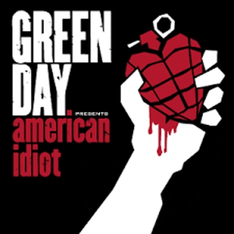
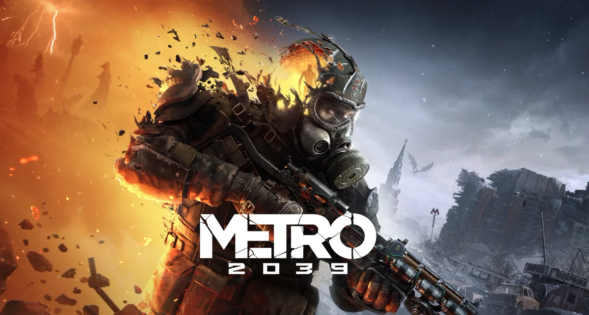
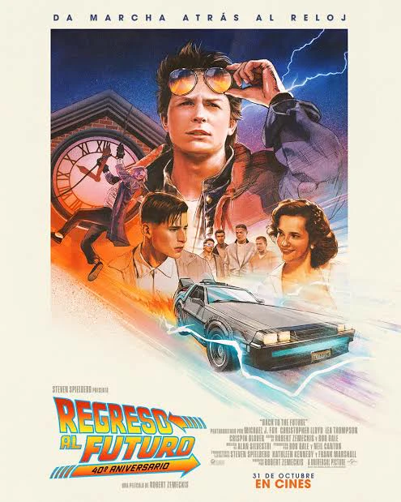
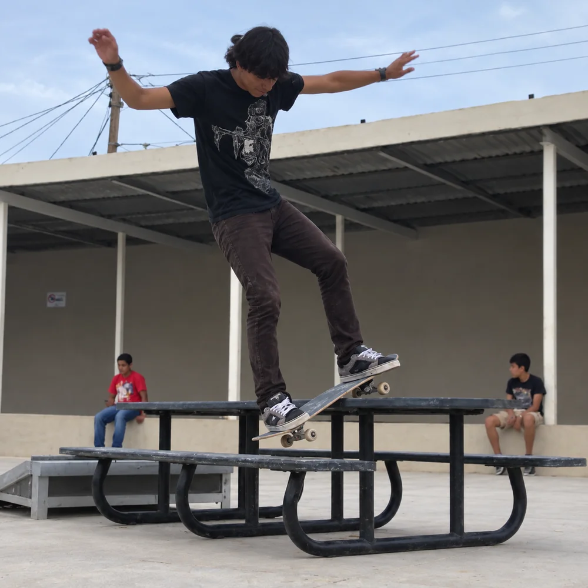

AFICIONES

Música
La música es una de mis mayores aficiones, especialmente el punk rock y sus diferentes variantes, y disfruto descubrir bandas, conciertos y nuevas propuestas. Mi banda favorita es Green Day.
El punk también me hizo conocer el straight edge, un movimiento que nació en la escena hardcore punk de los ochenta y que propone una vida sin tabaco, alcohol ni drogas. Aunque no me considero straight edge como tal, sí tengo el hábito de no fumar, no tomar y no consumir drogas, y de mantener una P.M.A. (actitud mental positiva).

Videojuegos
También soy un apasionado de los videojuegos y de todo lo relacionado con la cultura que los rodea. Me interesa tanto jugarlos como explorar cómo están hechos, su dirección artística, diseño de escenarios y todos los elementos que hay detrás de ellos.
Me gustan sobre todo los shooters, el terror, el survival horror y la acción. Mis sagas favoritas son Halo, Metro, Resident Evil y Silent Hill, y también disfruto mucho Fortnite.

Cine
El cine es otra de las cosas que más disfruto. Me gustan sobre todo las películas de terror, suspenso y ciencia ficción, y fijarme en cómo están contadas: la fotografía, la música, la edición y la dirección de arte, detalles que también me inspiran en mi trabajo como diseñador.
Mi trilogía favorita es Volver al futuro (Back to the Future).

Deportes
Practiqué skateboard y futbol, y de vez en cuando disfruto ver deportes, principalmente futbol, NHL, NFL y MLB.
Soy fanático de las Chivas, los Boston Bruins, los New England Patriots, los Boston Red Sox y los Boston Celtics.
Tecnología
La tecnología es otra de mis grandes curiosidades. Me gusta mantenerme actualizado con las novedades, como la inteligencia artificial y los programas nuevos, probar dispositivos recientes y estar al tanto de las innovaciones que van surgiendo.
Más que por la novedad, lo hago porque me gusta probar nuevas formas de trabajar: buscar herramientas que me ayuden a optimizar mis procesos, ahorrar tiempo y obtener mejores resultados en cada proyecto.
Aprender por mi cuenta
En general, disfruto mucho aprender por mi cuenta y meterme en temas que despiertan mi curiosidad. Me gusta pasar de una afición a otra, experimentar y convertir algunas de esas ideas en proyectos propios.